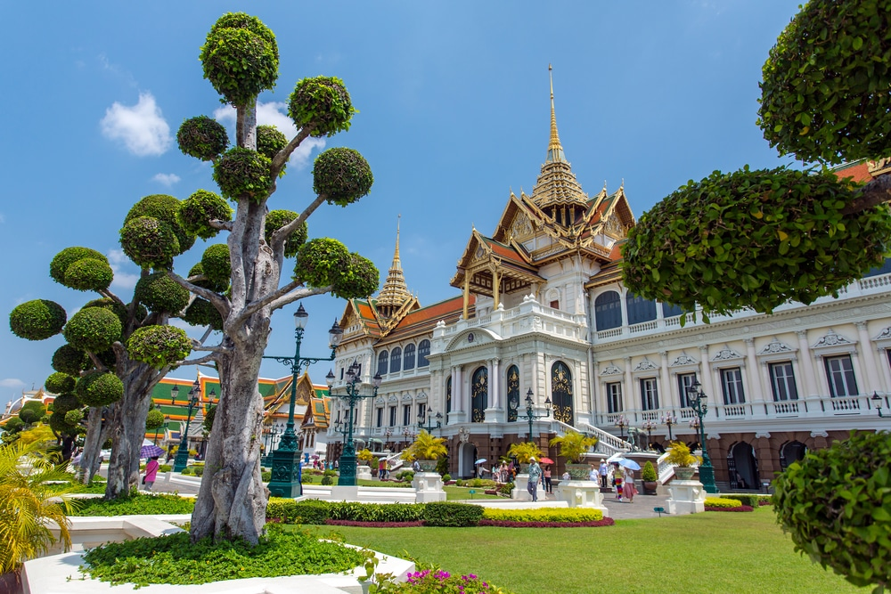
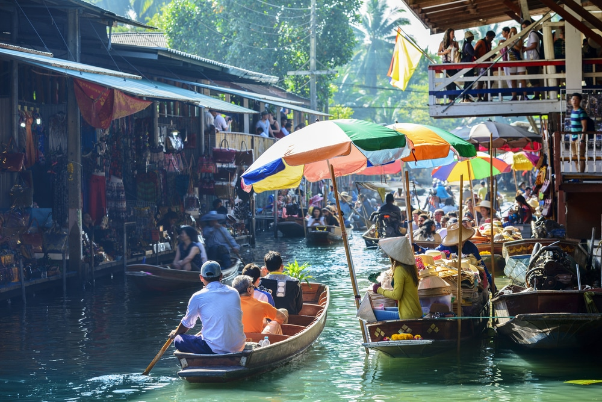
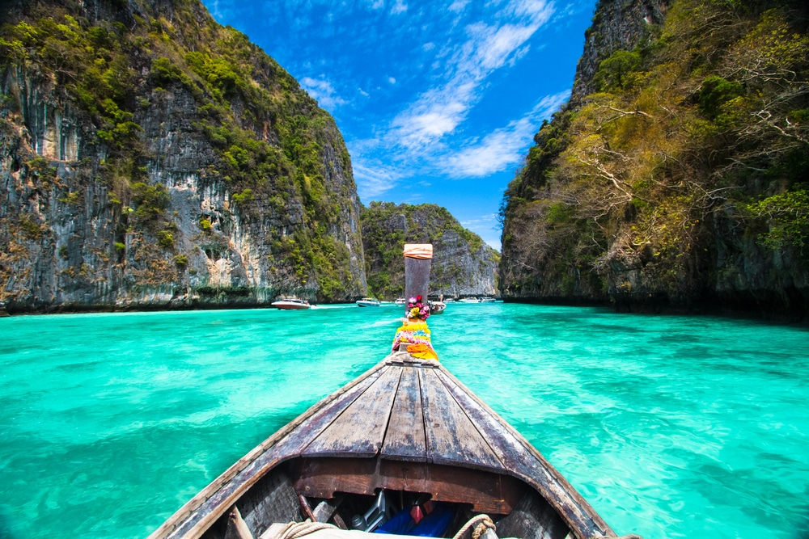
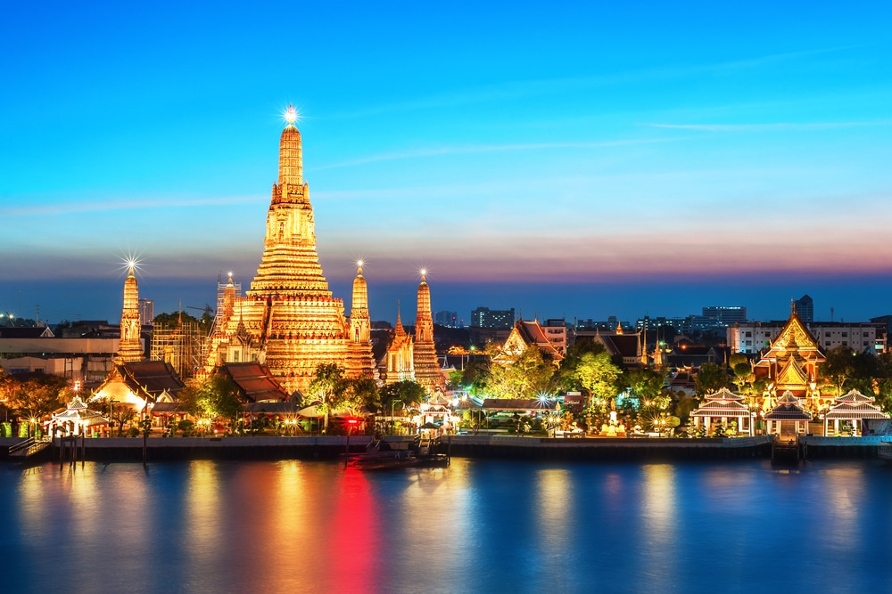
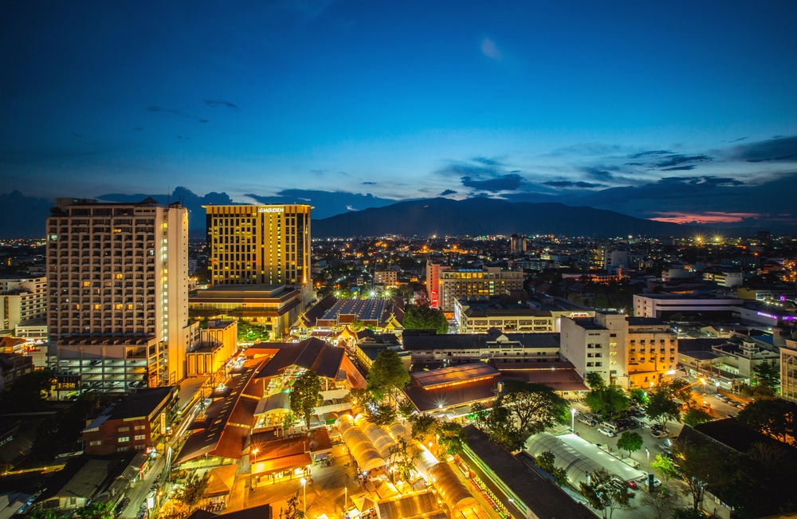
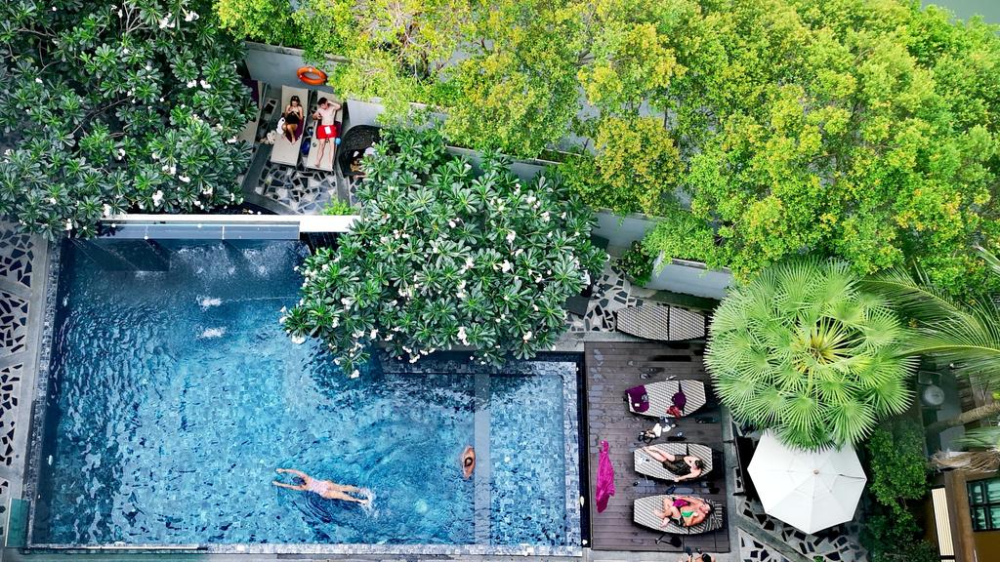

Things To Do -Sight To Visit
-

Visit the Grand Palace
Set in the heart of Bangkok this is probably the most famous attraction there is. For 150 years the palace was home to the king, his court, and the entire government of Thailand as well as the Royal Mint. With an area of 218,400 sq. meters there is so much to see and do, you will not be disappointed. In 1782 huge walls were built around the palace and offices to make it the attraction it is today, please note that a strict dress code is in place at the palace so you will need to dress in appropriate clothing or entry will be refused
-

Visit The Damnoen Saduak Floating Market
There are several floating markets in Thailand but this one is the biggest and most famous, it is huge! There are boats everywhere going up and down the canals selling all sorts of foods and fruits. A visit to this market will give you a real insight into how things were many years ago. For those who love to take photos the narrow canals and small wooden stilt houses are sure to give you countless opportunities.
The market is situated about 100km outside of Bangkok but it is well worth the traveling time.
-

Take a trip to Koh Phi Phi
Shooting to fame after the Leonardo DiCaprio classic ‘The Beach’ as well as appearing in James Bond. Koh Phi Phi is a stunning island situated in the province of Krabi, this island is a must visit on any trip to Thailand. After visiting this staggeringly beautiful island no beach will ever feel as beautiful. The island has no roads so you will have to do a fair amount of walking but with everything happening between the two main beaches you will never be far from the hive of activity.
-

Take a Trip to Wat Arun
Thailand is home to over 31,000 Buddhist temples, this particular temple Wat Arun is named after Aruna, the God of Dawn. The temple sits on the banks of the Chao Phraya River and is one of the most stunning sites you can see. The tower is 79 meters tall and has been covered in colorful porcelain and ceramic tiles making for a mesmerizing sight. When you come to the entrance of the temple you will see a pair of mythical giants that are said to guard the temple.
-

Visit Chiang Mai Night Bazaar
During the day the Chang Klan Road is just an ordinary road in Chiang Mai, full of tourists, shops, guest houses and Tuk Tuk drivers, but at night a transformation takes place. From dusk until midnight hundreds of stall holders line the 1km stretch of road and turn the area into a shopper’s paradise. Everything is for sale including various different designer products (mainly fake,) you are expected to barter with the street sellers for whatever you choose to buy which all adds to the fun of the Bazaar. It does not matter what the weather is like or what day of the year you choose the market will always be open.
Things To Do-Where To Eat
Blue Elephant
Dinner at the Blue Elephant in Bangkok is the culinary highlight of many people’s trip to the city. This restaurant has branches in many major cities across the world, but there’s something special about this location.
Eat Me
he name of this restaurant alone promises something mouth-watering and delicious. Eat Me combines culinary delights and culture, combing cuisines from all over the world to create one international menu that offers over 50 meal choices.
Goji Kitchen And Bar
Located in one of Bangkok’s largest hotel, the Marriott Marquis Queen’s Park, is the newly opened Goji Kitchen and Bar. This casual, buffet-style restaurant offers authentic regional cuisine along with delicious western dishes.
Anchan Vegetarian Restaurant
Anchan Vegetarian Restaurant’s slogan says it all: “Vegetarian food so delicious you won’t miss the meat.” This restaurant not only serves some the best vegetarian and vegan dishes in Thailand but also the best Thai food! The Anchan Vegetarian Restaurant is celebrated for its flavorsome curries, which are made using local spices.
Tealicious Bangkok
If you enjoy having delicious food in a cozy setting, you should definitely visit Tealicious Bangkok. This quaint restaurant serves authentic Thai dishes ranging from the famous ‘Tom Yum Goong’ to ‘Pad Thai’ noodles and spicy fresh ‘Somtam’.
Things To Do -Where To Sleep
Best Hotels in Thiland

Mazi Design Hotel by Kalima